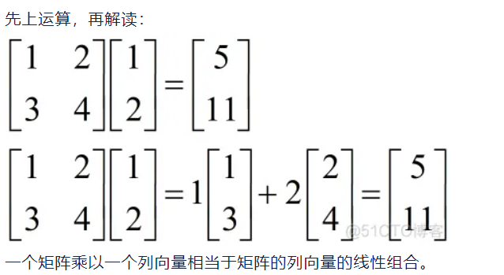
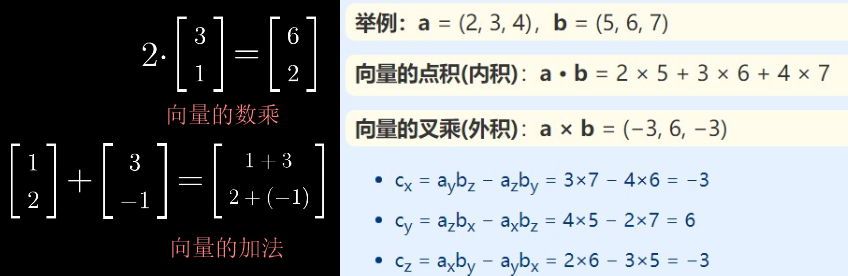

线性代数
1 introduction to vectors

2 Solving Linear Equations
- 线性代数 - Machine Learning
- 线性相关：一个向量能被向量组的其他成员线性组合出来；线性无关则不能。
- 基的定义：向量组中的向量互相线性无关，张成空间V，则它们是空间V的一组基。
选定基之后，向量表示对象，矩阵表示对象的运动，矩阵与向量相乘得到新的向量。一旦理解了这点，线性代数之后的各个主题，包括矩阵乘法、基变换、特征值等都会非常直观易懂。- 旋转矩阵：例如二维矩阵，可以将二维向量按角度旋转，见二维旋转矩阵与向量旋转
- 变换矩阵：坐标系xyz中的向量v，坐标系XYZ中的向量V，存在变换矩阵R使得
V = R * v - 剪切矩阵：变换矩阵中的一种，例如把正方形往一边挤压，使之成为平行四边形。

